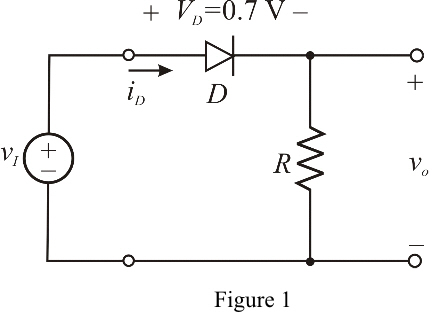
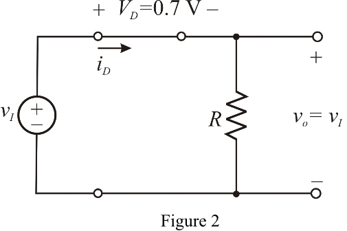
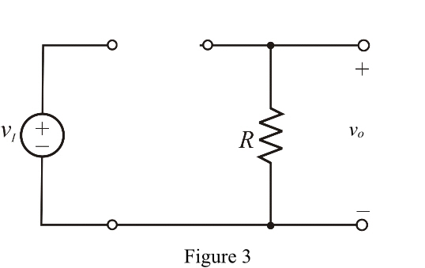

Redraw the circuit diagram as shown in Figure 1.

During the positive half-cycles of the input the diode acts as a short circuit is shown Figure 2.

Calculate the current through the diode.
Substitute and in equation.
Therefore, the value of resistor R is
Diode acts as an open circuit for negative cycles of input and entire input is appears across the diode.
Diode under reverse biased is shown in Figure 3.

Therefore the maximum reverse voltage appears across the diode is peak value of input voltage.
Therefore, the reverse voltage is, .